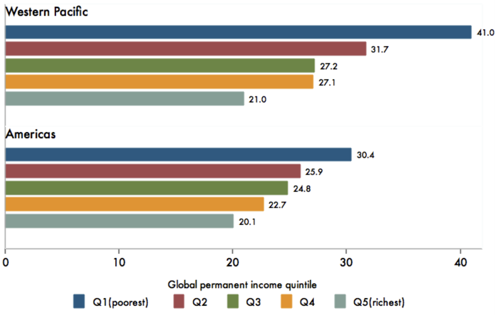
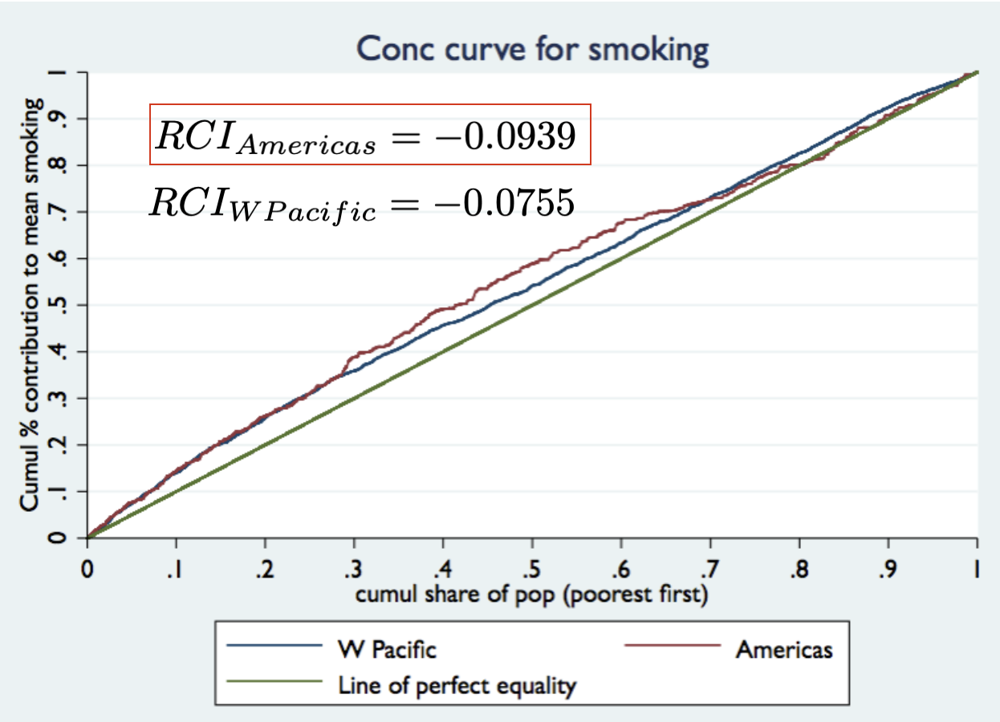

Decomposition Techniques for Social Epidemiology
Advanced Social Epidemiology PhD Course
Sam Harper
2026-06-10
Overview
Concentration Index Decomposition
Kitagawa-Blinder-Oaxaca Decomposition
Overview
Concentration Index Decomposition
Kitagawa-Blinder-Oaxaca Decomposition
Overview of Decomposition Techniques
Today:
- Inequality decomposition: Concentration Index
- Decomposing two-group differences: Kitagawa-Blinder-Oaxaca
Not covered here:
- Life table decomposition
- Effect decomposition (i.e., mediation)
- Decomposition of population rates
- Inequality decomposition for nominal social groups
Moving from Description to Explanation
Ultimately, we want to know why health inequalities are changing over time—what changed?
- Risk factors?
- Demographic composition?
- Social conditions?
Unpacking the ‘components’ of health inequality is an opportunity to better integrate the monitoring of health inequalities with the etiology of health inequalities.
These techniques often involve various kinds of ‘counterfactual’ scenarios
Overview
Life Table Decomposition
Concentration Index Decomposition
Kitagawa-Blinder-Oaxaca Decomposition
Overview
Life Table Decomposition
Concentration Index Decomposition
Kitagawa-Blinder-Oaxaca Decomposition
We want to understand this:
We want to understand this:
By estimating something like this:

Relative Concentration Curve

Formula for writing the Concentration Index
Recall1 that we can write the CI as:
\[RCI= \frac{2}{n\mu} \sum_{i=1}^{n}y_{i}R_{i}-1\]
where \(\mu\) is the mean of \(y_{i}\) (e.g., smoking status), \(R_{i}\) is the fractional rank of the ith person in the socioeconomic (i.e., income) distribution.
The basic idea here is to develop a model for predicting \(y\) using several determinants, then plug that model back into the equation for the \(RCI\)
Decomposition of the RCI1
Since the \(RCI\) is a function of health \((y_{i})\) and a socioeconomic rank variable \((R_{i})\), i.e. \[RCI= \frac{2}{n\mu} \sum_{i=1}^{n}{\color{red}{y_{i}}}R_{i}-1\]
Then suppose that one can write a regression equation expressing the health outcome of interest \((y_{i})\) as a function of several \(k_{i}\) determinants (e.g., age, gender, urban/rural status): \[\color{red}{y_{i}}=\alpha + \sum{\beta_{x}x_{k_{i}}}+\epsilon_{i}\]
Decomposition of the RCI
Since RCI is a function of \(y_{i}\) and socioeconomic rank, one can then re-express the concentration index as:
\[RCI=\sum{(\beta_{k}\bar{x}_{k}/\mu)RCI_{k}}+gRCI_{e}/\mu\]
Where
- \(\mu\) is the mean of y,
- \(\bar{x}_{k}\) is the mean of \(x_{k}\),
- \(\beta_{k}\) is the regression coefficient for \(x_{k}\), and
- \(RCI_{k}\) is the concentration index for \(x_{k}\).
The basic idea: how much of the overall inequality is due to other factors that are both differentially distributed by \(x\) (income) and also affect \(y\) (e.g., smoking)?
Explained and unexplained components
This equation results in 2 components of socioeconomic inequality:
\[RCI=\sum{(\beta_{k}\bar{x}_{k}/\mu)RCI_{k}}+gRCI_{e}/\mu\]
One part \((\beta_{k}\bar{x}_{k}/\mu)RCI_{k}\) that is due to the association between income and other factors that predict health
The other part \((gRCI_{e}/\mu)\) is ‘unexplained’, i.e., inequality that cannot be explained by systematic variation across income groups in the determinants of health.
Two types of ‘explained’ components

The influence of determinants depends on two things:
- the strength of the relationship between each factor and income \((C_{k})\)
\(\color{blue}{RCI_{k}}\)
- the strength of the relationship between each factor and health, and its prevalence in the population (elasticity).
\(\color{red}{\beta_{k}\bar{x}_{k}/\mu}\)
Procedure for decomposing the Concentration Index
1 Estimate a regression equation predicting \(y\) (‘health’) from its determinants \((\beta_{k}x_{k})\):
\[\color{red}{y_{i}}=\alpha + \sum{\beta_{x}x_{k_{i}}}+\epsilon_{i}\]
2 Calculate the mean of \(y\) \((\mu)\) and of each of the determinants (e.g., education, age)
3 Calculate the Concentration Index for the health variable (C) and for each determinant in the equation predicting health \((C_{k})\).
- That is, use each determinant \(x_{k}\) as the “outcome” and estimate a CI for age, CI for education, etc.
Procedure for decomposing the Concentration Index
4 Calculate the absolute contribution of each determinant by multiplying its ‘elasticity’ by its concentration index \((C_{k})\):
\[(\beta_{k}\bar{x}_{k}/\mu)RCI_{k}\]
5 Calculate the percentage contribution of each determinant:
\[[(\beta_{k}\bar{x}_{k}/\mu)RCI_{k}]/RCI\]
Example: Decomposing Socioeconomic Inequality in Current Smoking
Smoking by income quintile


Source: Author’s calculations
Concentration curve for smoking

Predictors of current smoking: Sweden
| Variable | OR | ci | p |
|---|---|---|---|
| Age (years) | 1 | (0.99, 1.01) | 0.906 |
| Female | 1.15 | (0.73, 1.83) | 0.547 |
| Low education (ISCED 1–4) | 1.43 | (0.90, 2.27) | 0.130 |
| Married | 0.37 | (0.21, 0.65) | <0.001 |
| Binge drinking (monthly+) | 1.46 | (0.92, 2.32) | 0.107 |
| Obese (BMI ≥ 30) | 1.64 | (0.90, 2.99) | 0.106 |
Estimation for a specific factor: Education
\[RCI=\sum{(\beta_{k}\bar{x}_{k}/\mu)RCI_{k}}+gRCI_{e}/\mu\]
- Estimated \(\beta\) coeff on education (logit scale): 0.359 (OR = 1.43)
- Marginal effect on probability scale: 0.024 (2.4 pct points)
- Mean low education: 0.452
- Mean smoking rate: 7.3%
With these parameters, the elasticity of smoking with respect to education is: (0.024 * 0.452 / .073) = 0.148
Interpretation: a 1% increase in low education increases smoking by 14.8% (not percentage points!).
What about the RCI for education?
Concentration curve for education
Note the y-axis is cumulative share of education

Estimation for a specific factor: Education
Recall the decomposition formula:
\[RCI=\sum{(\color{red}{\beta_{k}\bar{x}_{k}/\mu})\color{blue}{RCI_{k}}}+gRCI_{e}/\mu\]
So the elasticity of smoking (from the previous slide) with respect to education is (-.0051 * 8.9 / .175) = -.2582
Now we have the RCI for education = 0.156
So now we can calculate the contribution of education as:
\[\text{Elasticity}\times RCI_{ed} = -.2582 * .156 = -.04\]
Thus education accounts for -.04/ -.0939 = 41.6% of the overall \(RCI\)
Decomposition of Income-Related Inequality in Smoking: Americas region
Overall RCI = -0.094

Decomposition of Income-Related Inequality in Smoking: Americas region
Overall RCI = -0.094
| Contribution | ||||
|---|---|---|---|---|
| Variable | Elasticity | CI_k | Absolute | % |
| Age | -0.06 | 0.001 | -0.00008 | 0.04 |
| Binge drinker | 0.15 | 0.103 | 0.0159 | -7.83 |
| Female | 0.06 | -0.031 | -0.00176 | 0.87 |
| Low education | 0.15 | -0.265 | -0.04005 | 19.73 |
| Married | -0.35 | 0.284 | -0.09978 | 49.16 |
| Obese | 0.07 | -0.013 | -0.00086 | 0.42 |
| Residual | 0 | NA | -0.07636 | 37.62 |
Caveats for decomposing the RCI
Decomposition results will be sensitive to the choice of determinants included (i.e., how well-specified the model is for predicting y).
The regression equations are predictive and not causal models.
Main utility is not in estimating the potential impact on y of changing the distribution of socioeconomic position, but in indicating the potential role that other factors may play in generating socioeconomic inequalities in health.
Overview
Life Table Decomposition
Concentration Index Decomposition
Kitagawa-Blinder-Oaxaca Decomposition
Idea for Decomposition of Means
The core idea is to explain the distribution of the outcome variable in question by a set of factors that vary systematically with exposure status.
Thus, we want to know, on average, why the mean level of health or disease differs between exposed and unexposed groups.
Since, for most health outcomes there are multiple determinants, we may want to know which of these determinants plays more or less important roles in explaining the difference in average outcomes.
“Unpacking” or “decomposing” difference.
Origins

Evelyn Kitagawa (1955) was a sociologist and demographer who devised a non-parametric method for decomposing differences between rates, refined by Prithwis das Gupta in 1978.
- Focused on understanding group contributions to rate differences.
Studies by Oaxaca (1973) and Blinder (1973) applied regression-based decomposition methods to analyze the wage gap between men and women and between whites and blacks in the USA.
- Focused on how much of wage gap was ‘explained’ by differences in observable characteristics
Brief note on interpretation1
Decomposition methods are based on regression analyses, and thus all of the usual caveats about good specification apply
If regressions are purely descriptive, they reveal the associations that characterize the health inequality. Then inequality is explained in a statistical sense but implications for policies to reduce inequality are limited
If data allow identification of causal effects, then the factors that generate the inequality are identified
Then one can (potentially) draw conclusions about how policies would impact on inequality
Kitagawa-Blinder-Oaxaca: Basic Idea
Two potential sources of mean differences in outcomes
1. Means
Differences in the prevalence of determinants of outcome
2. Coefficients
Differences in the coefficient of a given determinant on the outcome (i.e., effect measure modification)
Think of 2 regressions for a given determinant \(X\):
- Exposed
- Unexposed
Each generates its own coefficient and uses its own mean.
Use these to generate counterfactuals.

Two ways of expressing the mean difference in \(y\)
The overall gap between exposed and unexposed can be written as a function of differences the respective beta coefficients, evaluated at the mean for each group:

First method
Coefficients of unexposed
Means of exposed
\(y^{exp} - y^{unexp} = \Delta\bar{x}\beta^{unexp}-\Delta\beta x^{exp}\)

Second method
Coefficients of exposed
Means of unexposed
\(y^{exp} - y^{unexp} = \Delta\bar{x}\beta^{exp}-\Delta\beta x^{unexp}\)

The two methods are equally valid
In the first, the differences in the \(X\)s are weighted by the coefficients of the unexposed group and the differences in the coefficients are weighted by the \(X\)s of the exposed group: \[y^{exp} - y^{unexp} = \Delta\bar{x}\beta^{unexp}-\Delta\beta x^{exp}\]
whereas, in the second, the differences in the \(X\)s are weighted by the coefficients of the exposed group and the differences in the coefficients are weighted by the \(X\)s of the unexposed group: \[y^{exp} - y^{unexp} = \Delta\bar{x}\beta^{exp}-\Delta\beta x^{unexp}\]
Example: Decomposing Educational Differences in BMI
Basic question
What is the average difference in body mass index (BMI) between those with low vs. high education?
How much of this difference is due to the fact that determinants of BMI (age, gender, smoking, drinking, income) differ between education groups?
Any residual difference is due to education differences in the associations between those risk factors and BMI — i.e., the coefficients differ.
Example data
European Social Survey Round 11, Italy (n = 1743)
Body mass index as outcome (kg/m²): weight / height²
Overall difference by education: High ed (ISCED 5–7) vs Low ed (ISCED 1–4)
Potential determinants (the Xs):
- age (years)
- gender (female = 1)
- smoking (1 = current smoker)
- binge drinking (1 = monthly or more)
- married (1 = currently married)
- income decile (1–10)
BMI distribution by education

Differences in determinants
Low-educated Italians differ from high-educated on several covariates
These differences could explain part of the BMI gap

Differences in coefficients
Each covariate may have a different association with BMI by education
Differences in returns form the unexplained component

Decomposition results: the gap
| Coefficients used in decomposition: | ||||||
|---|---|---|---|---|---|---|
| Low ed | High ed | Pooled | ||||
| Label | g2_est | g2_se | g1_est | g1_se | gp_est | gp_se |
| High ed | 23.594 | 0.171 | 23.594 | 0.171 | 23.594 | 0.171 |
| Low ed | 25.200 | 0.087 | 25.200 | 0.087 | 25.200 | 0.087 |
| Difference | 1.607 | 0.189 | 1.607 | 0.189 | 1.607 | 0.189 |
| Endowments | 0.608 | 0.108 | 0.576 | 0.205 | 0.709 | 0.110 |
| Age (years) | 0.415 | 0.074 | 0.294 | 0.113 | 0.420 | 0.078 |
| Female | 0.080 | 0.051 | 0.130 | 0.086 | 0.090 | 0.058 |
| Current smoker | 0.004 | 0.008 | -0.010 | 0.019 | 0.001 | 0.007 |
| Binge drinking (monthly+) | 0.001 | 0.007 | 0.002 | 0.013 | 0.001 | 0.007 |
| Married | 0.012 | 0.016 | 0.015 | 0.024 | 0.013 | 0.016 |
| Income (decile) | 0.095 | 0.071 | 0.146 | 0.144 | 0.184 | 0.066 |
| Coefficients | 1.030 | 0.259 | 0.999 | 0.184 | 0.897 | 0.165 |
| Age (years) | 0.865 | 0.691 | 0.745 | 0.595 | 0.740 | 0.607 |
| Female | 0.466 | 0.181 | 0.516 | 0.205 | 0.507 | 0.200 |
| Current smoker | -0.145 | 0.115 | -0.159 | 0.127 | -0.156 | 0.125 |
| Binge drinking (monthly+) | 0.003 | 0.104 | 0.003 | 0.108 | 0.003 | 0.107 |
| Married | -0.037 | 0.208 | -0.035 | 0.193 | -0.035 | 0.195 |
| Income (decile) | 0.133 | 0.425 | 0.184 | 0.585 | 0.095 | 0.564 |
| Intercept | -0.256 | 0.837 | -0.256 | 0.837 | -0.256 | 0.837 |
| Interaction | -0.032 | 0.191 | 0.032 | 0.191 | — | — |
Low ed BMI = 25.2 kg/m², High ed BMI = 23.59 kg/m², gap = 1.61
Decomposition results: Low ed betas
| Coefficients used in decomposition: | ||||||
|---|---|---|---|---|---|---|
| Low ed | High ed | Pooled | ||||
| Label | g2_est | g2_se | g1_est | g1_se | gp_est | gp_se |
| High ed | 23.594 | 0.171 | 23.594 | 0.171 | 23.594 | 0.171 |
| Low ed | 25.200 | 0.087 | 25.200 | 0.087 | 25.200 | 0.087 |
| Difference | 1.607 | 0.189 | 1.607 | 0.189 | 1.607 | 0.189 |
| Endowments | 0.608 | 0.108 | 0.576 | 0.205 | 0.709 | 0.110 |
| Age (years) | 0.415 | 0.074 | 0.294 | 0.113 | 0.420 | 0.078 |
| Female | 0.080 | 0.051 | 0.130 | 0.086 | 0.090 | 0.058 |
| Current smoker | 0.004 | 0.008 | -0.010 | 0.019 | 0.001 | 0.007 |
| Binge drinking (monthly+) | 0.001 | 0.007 | 0.002 | 0.013 | 0.001 | 0.007 |
| Married | 0.012 | 0.016 | 0.015 | 0.024 | 0.013 | 0.016 |
| Income (decile) | 0.095 | 0.071 | 0.146 | 0.144 | 0.184 | 0.066 |
| Coefficients | 1.030 | 0.259 | 0.999 | 0.184 | 0.897 | 0.165 |
| Age (years) | 0.865 | 0.691 | 0.745 | 0.595 | 0.740 | 0.607 |
| Female | 0.466 | 0.181 | 0.516 | 0.205 | 0.507 | 0.200 |
| Current smoker | -0.145 | 0.115 | -0.159 | 0.127 | -0.156 | 0.125 |
| Binge drinking (monthly+) | 0.003 | 0.104 | 0.003 | 0.108 | 0.003 | 0.107 |
| Married | -0.037 | 0.208 | -0.035 | 0.193 | -0.035 | 0.195 |
| Income (decile) | 0.133 | 0.425 | 0.184 | 0.585 | 0.095 | 0.564 |
| Intercept | -0.256 | 0.837 | -0.256 | 0.837 | -0.256 | 0.837 |
| Interaction | -0.032 | 0.191 | 0.032 | 0.191 | — | — |
Using Low ed betas as reference — endowments account for 37.8% of the gap
Decomposition results: adding High ed betas
| Coefficients used in decomposition: | ||||||
|---|---|---|---|---|---|---|
| Low ed | High ed | Pooled | ||||
| Label | g2_est | g2_se | g1_est | g1_se | gp_est | gp_se |
| High ed | 23.594 | 0.171 | 23.594 | 0.171 | 23.594 | 0.171 |
| Low ed | 25.200 | 0.087 | 25.200 | 0.087 | 25.200 | 0.087 |
| Difference | 1.607 | 0.189 | 1.607 | 0.189 | 1.607 | 0.189 |
| Endowments | 0.608 | 0.108 | 0.576 | 0.205 | 0.709 | 0.110 |
| Age (years) | 0.415 | 0.074 | 0.294 | 0.113 | 0.420 | 0.078 |
| Female | 0.080 | 0.051 | 0.130 | 0.086 | 0.090 | 0.058 |
| Current smoker | 0.004 | 0.008 | -0.010 | 0.019 | 0.001 | 0.007 |
| Binge drinking (monthly+) | 0.001 | 0.007 | 0.002 | 0.013 | 0.001 | 0.007 |
| Married | 0.012 | 0.016 | 0.015 | 0.024 | 0.013 | 0.016 |
| Income (decile) | 0.095 | 0.071 | 0.146 | 0.144 | 0.184 | 0.066 |
| Coefficients | 1.030 | 0.259 | 0.999 | 0.184 | 0.897 | 0.165 |
| Age (years) | 0.865 | 0.691 | 0.745 | 0.595 | 0.740 | 0.607 |
| Female | 0.466 | 0.181 | 0.516 | 0.205 | 0.507 | 0.200 |
| Current smoker | -0.145 | 0.115 | -0.159 | 0.127 | -0.156 | 0.125 |
| Binge drinking (monthly+) | 0.003 | 0.104 | 0.003 | 0.108 | 0.003 | 0.107 |
| Married | -0.037 | 0.208 | -0.035 | 0.193 | -0.035 | 0.195 |
| Income (decile) | 0.133 | 0.425 | 0.184 | 0.585 | 0.095 | 0.564 |
| Intercept | -0.256 | 0.837 | -0.256 | 0.837 | -0.256 | 0.837 |
| Interaction | -0.032 | 0.191 | 0.032 | 0.191 | — | — |
Endowments shift slightly with choice of reference betas — the difference between columns is the interaction
Decomposition results: coefficients
| Coefficients used in decomposition: | ||||||
|---|---|---|---|---|---|---|
| Low ed | High ed | Pooled | ||||
| Label | g2_est | g2_se | g1_est | g1_se | gp_est | gp_se |
| High ed | 23.594 | 0.171 | 23.594 | 0.171 | 23.594 | 0.171 |
| Low ed | 25.200 | 0.087 | 25.200 | 0.087 | 25.200 | 0.087 |
| Difference | 1.607 | 0.189 | 1.607 | 0.189 | 1.607 | 0.189 |
| Endowments | 0.608 | 0.108 | 0.576 | 0.205 | 0.709 | 0.110 |
| Age (years) | 0.415 | 0.074 | 0.294 | 0.113 | 0.420 | 0.078 |
| Female | 0.080 | 0.051 | 0.130 | 0.086 | 0.090 | 0.058 |
| Current smoker | 0.004 | 0.008 | -0.010 | 0.019 | 0.001 | 0.007 |
| Binge drinking (monthly+) | 0.001 | 0.007 | 0.002 | 0.013 | 0.001 | 0.007 |
| Married | 0.012 | 0.016 | 0.015 | 0.024 | 0.013 | 0.016 |
| Income (decile) | 0.095 | 0.071 | 0.146 | 0.144 | 0.184 | 0.066 |
| Coefficients | 1.030 | 0.259 | 0.999 | 0.184 | 0.897 | 0.165 |
| Age (years) | 0.865 | 0.691 | 0.745 | 0.595 | 0.740 | 0.607 |
| Female | 0.466 | 0.181 | 0.516 | 0.205 | 0.507 | 0.200 |
| Current smoker | -0.145 | 0.115 | -0.159 | 0.127 | -0.156 | 0.125 |
| Binge drinking (monthly+) | 0.003 | 0.104 | 0.003 | 0.108 | 0.003 | 0.107 |
| Married | -0.037 | 0.208 | -0.035 | 0.193 | -0.035 | 0.195 |
| Income (decile) | 0.133 | 0.425 | 0.184 | 0.585 | 0.095 | 0.564 |
| Intercept | -0.256 | 0.837 | -0.256 | 0.837 | -0.256 | 0.837 |
| Interaction | -0.032 | 0.191 | 0.032 | 0.191 | — | — |
Coefficients component is larger than endowments — most of the BMI gap reflects differences in associations, not just composition
Decomposition results: pooled
| Coefficients used in decomposition: | ||||||
|---|---|---|---|---|---|---|
| Low ed | High ed | Pooled | ||||
| Label | g2_est | g2_se | g1_est | g1_se | gp_est | gp_se |
| High ed | 23.594 | 0.171 | 23.594 | 0.171 | 23.594 | 0.171 |
| Low ed | 25.200 | 0.087 | 25.200 | 0.087 | 25.200 | 0.087 |
| Difference | 1.607 | 0.189 | 1.607 | 0.189 | 1.607 | 0.189 |
| Endowments | 0.608 | 0.108 | 0.576 | 0.205 | 0.709 | 0.110 |
| Age (years) | 0.415 | 0.074 | 0.294 | 0.113 | 0.420 | 0.078 |
| Female | 0.080 | 0.051 | 0.130 | 0.086 | 0.090 | 0.058 |
| Current smoker | 0.004 | 0.008 | -0.010 | 0.019 | 0.001 | 0.007 |
| Binge drinking (monthly+) | 0.001 | 0.007 | 0.002 | 0.013 | 0.001 | 0.007 |
| Married | 0.012 | 0.016 | 0.015 | 0.024 | 0.013 | 0.016 |
| Income (decile) | 0.095 | 0.071 | 0.146 | 0.144 | 0.184 | 0.066 |
| Coefficients | 1.030 | 0.259 | 0.999 | 0.184 | 0.897 | 0.165 |
| Age (years) | 0.865 | 0.691 | 0.745 | 0.595 | 0.740 | 0.607 |
| Female | 0.466 | 0.181 | 0.516 | 0.205 | 0.507 | 0.200 |
| Current smoker | -0.145 | 0.115 | -0.159 | 0.127 | -0.156 | 0.125 |
| Binge drinking (monthly+) | 0.003 | 0.104 | 0.003 | 0.108 | 0.003 | 0.107 |
| Married | -0.037 | 0.208 | -0.035 | 0.193 | -0.035 | 0.195 |
| Income (decile) | 0.133 | 0.425 | 0.184 | 0.585 | 0.095 | 0.564 |
| Intercept | -0.256 | 0.837 | -0.256 | 0.837 | -0.256 | 0.837 |
| Interaction | -0.032 | 0.191 | 0.032 | 0.191 | — | — |
Pooled (Cotton) betas give a symmetric reference — no interaction term; the three columns bracket the range of plausible decompositions
Which covariates drive the endowments?
Variables where groups differ and that predict BMI contribute most
Income and age are the biggest drivers

Methods frontier
Attempting to reconcile the non-causal framework of KBO with mediation methods, new estimators.1

Summary
Various decomposition techniques exist that may be useful for analyzing social determinants of health:
- Regression-based decomposition of Concentration Index
- Oaxaca decomposition of mean health between groups
All of these techniques make assumptions that need to be evaluated in the course of analysis.
When used properly, decomposition techniques can help to provide key evidence on why health inequalities exist and change over time.
Jackson (2021)
References
Blinder, Alan S. 1973. “Wage Discrimination: Reduced Form and Structural Estimates.” Journal of Human Resources 8 (4): 436–55. https://doi.org/10.2307/144855.
Jackson, John W. 2021. “Meaningful Causal Decompositions in Health Equity Research: Definition, Identification, and Estimation Through a Weighting Framework.” Epidemiology 32 (2): 282290. https://doi.org/10.1097/EDE.0000000000001319.
Kakwani, Nanak, Adam Wagstaff, and Eddy van Doorslaer. 1997. “Socioeconomic Inequalities in Health: Measurement, Computation, and Statistical Inference.” Journal of Econometrics 77 (1): 87–103. https://doi.org/10.1016/S0304-4076(96)01807-6.
Kitagawa, Evelyn M. 1955. “Components of a Difference Between Two Rates.” Journal of the American Statistical Association 50 (272): 1168–94. https://doi.org/10.2307/2281213.
O’Donnell, Owen, Eddy van Doorslaer, Adam Wagstaff, and Magnus Lindelow. 2008. Analyzing Health Equity Using Household Survey Data. Washington, DC: World Bank.
Oaxaca, Ronald. 1973. “Male-Female Wage Differentials in Urban Labor Markets.” International Economic Review 14 (3): 693–709. https://doi.org/10.2307/2525981.
Wagstaff, Adam, Eddy van Doorslaer, and Naoko Watanabe. 2003. “On Decomposing the Causes of Health Sector Inequalities with an Application to Malnutrition Inequalities in Vietnam.” Journal of Econometrics 112 (1): 207–23. https://doi.org/10.1016/S0304-4076(02)00161-6.